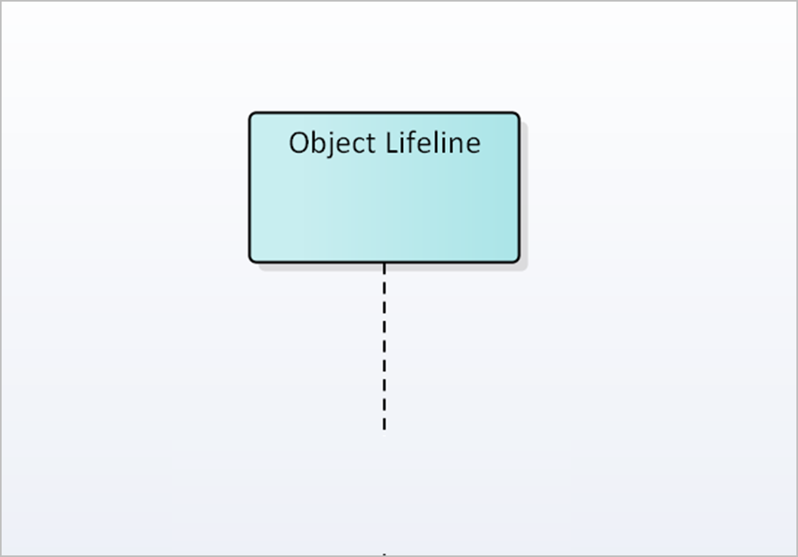
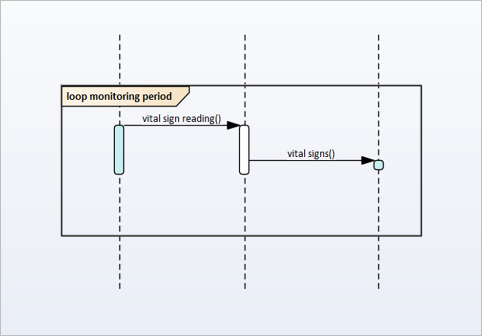
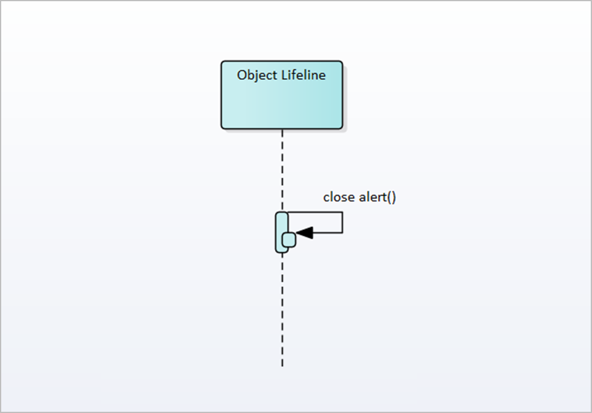
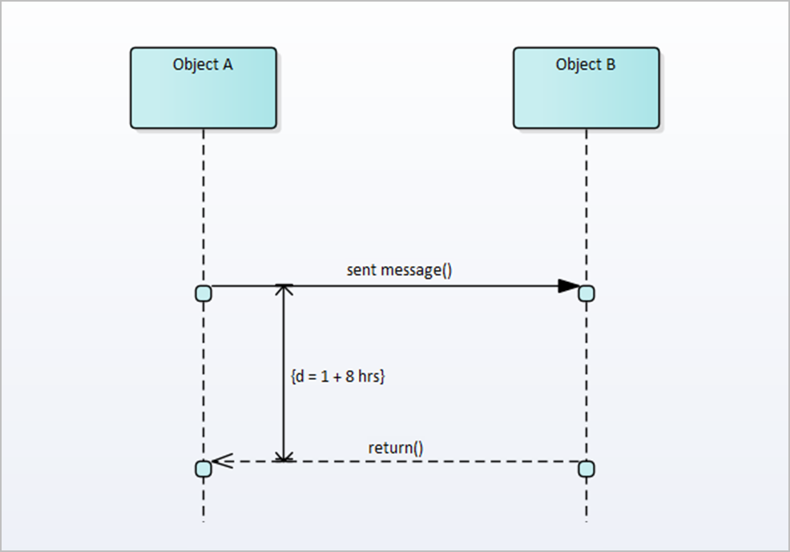

UML Sequence Diagram Models (Core Notations)
ConUMLSeqDiagCN UML Sequence Diagram Models (Core Notations)
Amendments History
| Date | Ver. | Inc. | Author | Amendment | |
|---|---|---|---|---|---|
| August 2010 | 0 | 1 | Kevin John | New Topic created to migrate content from Word Authoring Guide v2.0 | Draft |
| December 2010 | 0 | 2 | Kevin John | Previous content restructured into separated topics to enable links to work | Draft |
This table outlines the individual Lifeline Elements, Interactions and other modelling concepts, as well as the Core Notations
that may be utilised in the elaboration of UML Sequence Diagrams (for an example of some of these notations in context, see
the figure: example sequence diagram)
|
Entity |
Definition / Context |
Core Notations |
|||||||||
|---|---|---|---|---|---|---|---|---|---|---|---|
|

|
“An Object Lifeline represents a distinct connectable element and is an individual participant in an interaction. Object Lifeline
Elements are often used to represent ‘processing’ or ‘application’ functions.” |
Object Lifelines are represented on UML Sequence Diagrams as a stick-person symbol with a descending lifeline.
The Object Lifeline must be named and may also be Stereotyped to further define them.
|
|||||||||
 |
“An Actor Lifeline represents an individual user role that sends / receives interactions. Actors usually represent
roles that are the instigators and / or recipients of a sequence of interactions with other systems.” |
Actors Lifelines are represented on UML Sequence Diagrams as a stick-person symbol with a descending lifeline.
The Actor Lifeline must be named and may also be Stereotyped to further define them.
|
|||||||||
|

|
“Fragment Regions are used to encloses a discrete set of interactions.”
Fragment Regions can be defined as:
|
Fragment Regions are represented as a rectangular region with a "tab name".
The tab name should be labelled by type as either: ‘opt’, ‘alt’ or ‘loop’.
|
|||||||||
|
(figures are available as part of the content for each of the defined applications)
|
“An ‘Interaction’ is the horizontal connector between two vertical Lifelines (Object or Actor Lifeline Elements) on a UML Sequence
Diagram. It denotes a ‘transmission’ (message) between the two Lifeline elements.” |
Interactions are represented as horizontal lines between Object or Actor Lifelines, with an arrow pointing in the direction
it is to be read.
Timing constraints may also be applied to Interactions.
|
|||||||||
|
Asynchronous Interaction:
 |
“Asynchronous Interactions indicate and single transmission between two Lifelines; they do not require a response (e.g. a
Return Interaction) before processing can continue (e.g. they are ‘one-way’).” |
Asynchronous Interactions are represented as a solid horizontal line arrow with an open arrow head (between Actor and / or
Object Lifeline Elements).
The Interaction label should be located above the connector.
|
|||||||||
|
Synchronous Interaction:
 |
“Synchronous Interactions indicate a transmission that requires a response (e.g. they are ‘two-way’) before processing can
continue — they are always paired with a ‘Return Interaction’.” |
Synchronous Interactions are represented as a solid line arrow with a sold filled arrow head (between Actor and / or Object
Lifeline Elements).
The Interaction label should be located above the connector.
|
|||||||||
|
Return Interaction:
(See figure for Synchronous Interactions)
|
“Return Interactions send information back to the ‘sender’ as a return transmission (e.g. they may send an acknowledgement
of receipt of the interaction) — they are always paired with a ‘Synchronous’ interaction.” |
Return Interactions are represented as a dotted line arrow with an open arrow head.
The Interaction label should be located above the connector.
|
|||||||||
|
Self-Message:

|
“A Self-Message reflects a new process or method invoked within the calling lifeline's operation.” |
A Self Message is represented as a solid line with an arrow that loops back to the originating lifeline.
The label for the Self Message should be located beside the message.
|
|||||||||
|
Timing Constraint — Round-Trip Time:

|
“A Round-Trip Time on a Sequence Diagram represents the required duration constraint between the sending of the originating
Interaction and the receipt of a responding Interaction.”
This notation is used solely with Synchronous Interactions and their Return Interactions. |
A Round-Trip Time constraint is represented as a line with arrows at both ends pointing between the between the ‘send’ and
‘return’ Interactions.
The duration constraint should be shown as a visible label next to the line between the two Interactions (e.g. d = t ÷ n hours [where ‘d’ = ‘duration’, ‘t’ = ‘time’, and ‘n’ is the required amount of time]).
|
|||||||||
|
Timing Constraint — Timeout:
 |
“A Timeout on a Sequence Diagram is a timing observation applied to the corresponding Interaction. They indicate the longest
time which an Interaction is allowed to take. Beyond this time any further handling of the transmission should be abandoned,
and error handling triggered.” |
A Timeout constraint is represented as a visible label next to the originating Interaction.
The constraint value should be labelled: "Timeout = t + n" (where ‘t’ = ‘time’, and ‘n’ is the required amount of time).
|